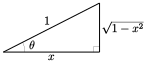

Seção 1 Derivação implícita
Objetivos: Estrutura
Conceito de derivação implicita.
Funções trigonométricas inversas.
Derivada das funções trigonométricas inversas.
Aqui vamos apresentar o conceito de derivação implicita e mais adiante usá-lo para calcular derivada de funções trigonométricas inversas.
Subseção 1.1 Derivação Implicita
Diferenciação implícita é uma maneira simples usada para calcular derivadas de funções ou
quando não se conhece uma fórmula explícita para a função, mas conhece uma equação que a função obedece ou
mesmo quando temos uma fórmula explícita, mas complicada, para a função, e a mesma obedece a uma equação simples.
Para realizar essa tarefa primeiro derivamos de ambos os lados da equação e então isolamos a derivada desejada. Na verdade, já fizemos isso, sem usar o nome “diferenciação implícita”, quando encontramos a derivada de \(\log x\) anteriormente. No ocasião, sabíamos que a função \(f(x)=\log x\) satisfaz a equação \(e^{f(x)}=x\) para todo \(x\text{.}\) Ou seja, as funções \(e^{f(x)}\) e \(x\) são de fato a mesma função e, portanto, têm a mesma derivada. Então obtemos
Em seguida, usamos a regra da cadeia para obter \(\dfrac{\dd }{\dd x}\left[e^{f(x)}\right]=e^{f(x)}f'(x)\text{,}\) que nos disse que \(f'(x)\) obedece à equação
A maneira típica de se acostumar com a diferenciação implícita é praticar com problemas envolvendo retas tangentes às curvas. Então, a seguir estão alguns exemplos de encontrar as equações de retas tangentes a curvas.
Exemplo 1.1. Encontrando uma reta tangente usando diferenciação implícita.
Encontre a equação da reta tangente a \(y=y^3+xy+x^3\) em \(x=1\text{.}\)
Este é um exemplo usual, mas um pouco complicado pelo fato de a curva ser dada por uma equação cúbica — o que significa que não podemos resolver diretamente para \(y\) em termos de \(x\) ou vice-versa. Então, realmente precisamos da derivação implícita.
Primeiro observe que quando \(x=1\) a equação, \(y=y^3+xy+x^3\text{,}\) da curva simplifica para \(y=y^3+y+1\) ou \(y^3=-1\text{,}\) que podemos resolver: \(y=-1\text{.}\) Portanto, sabemos que a curva passa por \((1,-1)\) quando \(x=1\text{.}\)
Agora, para encontrar a inclinação da reta tangente em \((1,-1)\text{,}\) finja que nossa curva é \(y=f(x)\) para que \(f(x)\) obedece
\begin{align*} f(x) \amp= f(x)^3 + x f(x) + x^3 \end{align*}para todos os \(x\text{.}\) Derivando ambos os lados fornece\begin{gather*} f'(x)=3f(x)^2f'(x)+f(x)+xf'(x)+3x^2 \end{gather*}Neste ponto podemos isolar para \(f'(x)\) e escrevê-lo em termos de \(f(x)\) e \(x\text{,}\) mas como só queremos respostas quando \(x=1\text{,}\) vamos substituir \(x=1\) e \(f(1)=-1\) (já que a curva passa por \((1,-1)\)).
Substituindo \(x=1,\ f(1)=-1\) nos dá
\begin{align*} f'(1)\amp=3f'(1)-1+f'(1)+3 \amp \text{ e então } f'(1)=-\frac{2}{3} \end{align*}A equação da reta tangente é
\begin{gather*} y=y_0+f'(x_0)(x-x_0)=-1-\frac{2}{3}(x-1) =-\frac{2}{3}x-\frac{1}{3} \end{gather*}
Podemos reescrever a equação da reta tangente como \(2x+3y=-1\text{.}\)
NoExemplo 1.1, substituímos \(y\) por \(f(x)\) no meio do cálculo. Na verdade, não temos que fazer isso. Quando estamos escrevendo nossa solução, podemos lembrar que \(y\) é uma função de \(x\text{.}\) Então podemos começar com
e derivar lembrando que \(y\equiv y(x)\)
\begin{align*} y^{\prime} \amp= 3 y^2 y' + xy' + y + 3x^2\\ \end{align*}E agora substitua \(x=1, y=-1\) para obter
\begin{align*} y'(1) \amp= 3 \cdot y'(1) + y'(1) - 1 + 3 \amp \text{e assim}\\ y'(1) \amp= -\frac{2}{3} \end{align*}A próxima é ao mesmo tempo um pouco mais fácil (porque é quadrática) e um pouco mais difícil (porque nos pedem a tangente em um ponto genérico da curva, não em um específico).
Exemplo 1.2. Outra reta tangente por derivação implicita.
Seja \((x_0,y_0)\) um ponto da elípse \(3x^2+5y^2=7\text{.}\)
(a)
Encontre a equação da reta tangente para \(x_0=1\) e \(y_0\) positivo.
Quando \(x=1\) a equação dada satisfaz
\begin{align*} 3 + 5y^2 \amp= 7\\ 5y^2 \amp= 4\\ y \amp= \pm \frac{2}{\sqrt{5}}. \end{align*}Estamos interessados apenas \(y\) no positivo, assim nosso ponto da curva é \((1,2/\sqrt{5})\text{.}\)Agora usamos a derivação implícita para encontrar \(\dfrac{\dd y}{\dd x}\) neste ponto. Primeiro simulamos que resolvemos a curva explicitamente, para algum intervalo de \(x\text{,}\) com \(y=f(x)\text{.}\) A equação fica
\begin{align*} 3x^2 + 5f(x)^2 \amp= 7 \amp \ct{Derivando ambos os lados}\\ 6x + 10 f(x) f'(x) \amp= 0\\ f'(x) \amp= - \frac{3x}{5f(x)} \end{align*}Quando \(x=1, y= 2/\sqrt{5}\) isso se torna
\begin{align*} f'(1) \amp= - \frac{3}{5 \cdot 2/\sqrt{5}} = - \frac{3}{2\sqrt{5}} \end{align*}Então a reta tangente passa por \((1,2/\sqrt{5})\) e tem inclinação \(- \frac{3}{2\sqrt{5}}\text{.}\) Portanto, a reta tangente tem equação\begin{align*} y \amp=y_0+f'(x_0)(x-x_0)\\ \amp= \frac{2}{\sqrt{5}} - \frac{3}{2\sqrt{5}} (x-1)\\ \amp= \frac{7 - 3x}{2\sqrt{5}} \end{align*}ou equvalentemente\begin{equation*} 3x + 2\sqrt{5} y= 7 \end{equation*}
(b)
Em seguida, encontre uma equação para a reta tangente à elipse em um ponto genárico \((x_0,y_0)\text{.}\)
Vamos repetir o processor do item anterior, mas com um ponto genárico \((x_0,y_0)\text{:}\)
-
Um bom primeiro passo aqui é esboçar a curva. Uma vez que esta é uma elipse, é bastante simples.


Observe que existem dois pontos na elipse — os pontos extremos direito e esquerdo \((x_0,y_0)=\pm\big(\sqrt{\frac{7}{3}},0\big)\) — em que a reta tangente é vertical. Nesses dois casos, a reta tangente é apenas \(x=x_0\text{.}\)
-
Já que isso é quadrático para \(y\text{,}\) poderíamos resolvê-lo explicitamente para obter
\begin{align*} y \amp= \pm \sqrt{\frac{7-3x^2}{5}} \end{align*}e escolha o ramo positivo ou negativo conforme apropriado. Então poderíamos diferenciar para encontrar a inclinação e juntar as coisas para obter a reta tangente.
Mas mesmo neste caso relativamente fácil, é computacionalmente mais limpo e, portanto, menos vulnerável a erros mecânicos, usar a derivação implícita. Então é isso que vamos fazer.
Agora podemos novamente “fingir” que resolvemos a equação da elipse para \(y=f(x)\) perto de \((x_0,y_0)\text{,}\) mas não vamos fazer isso. Em vez disso (como fizemos emExemplo 1.2) apenas lembre-se que quando diferenciamos \(y\) é realmente uma função de \(x\text{.}\) Então a partir de
\begin{align*} 3x^2 + 5y^2 \amp=7 \amp \ct{Derivando em ambos os lados}\\ 6x + 5\cdot 2y \cdot y' \amp= 0 \end{align*}Podemos então resolver isso para \(y'\text{:}\)\begin{align*} y' \amp= -\frac{3x}{5y} \end{align*}onde \(y'\) e \(y\) são ambas funções de \(x\text{.}\)Portanto, no ponto \((x_0,y_0)\) temos
\begin{align*} \left. y' \right|_{(x_0,y_0)} \amp= -\frac{3x_0}{5y_0} \end{align*}Esta é a inclinação da linha tangente em \((x_0,y_0)\) e então sua equação é\begin{align*} y \amp=y_0+y' \cdot (x-x_0)\\ \amp= y_0 -\frac{3x_0}{5y_0}(x-x_0)\\ \end{align*}Podemos simplificar isso multiplicando por \(5y_0\) para obter
\begin{align*} 5y_0 y \amp= 5y_0^2-3x_0x +3x_0^2\\ \end{align*}Podemos simplificar um pouco mais movendo todos os termos que contêm \(x\) ou \(y\) para o lado esquerdo e todo o resto para o direito:
\begin{align*} 3x_0x+5y_0y \amp=3x_0^2+5y_0^2\\ \end{align*}Mas há mais uma coisa que podemos fazer, nossa equação original é \(3x^2+5y^2=7\) para todos os pontos da curva, então sabemos que \(3x_0^2 +5a_0^2=7\text{.}\) Isso simplifica o lado direito.
\begin{align*} 3x_0x+5y_0y \amp=7 \end{align*}Ao derivar esta fórmula para a reta tangente em \((x_0,y_0)\) nós assumimos que \(y_0\ne 0\text{.}\) Mas, na verdade, a resposta final também funciona quando \(y_0=0\) (que significa \(x_0=\pm\sqrt{\frac{7}{3} }\)), para que a reta tangente seja \(x=x_0\text{.}\)
Também podemos verificar que nossa resposta para \((x_0,y_0)\) se reduz à nossa resposta para \(x_0=1\text{.}\)
Quando \(x_0=1\) encontramos \(y_0=2/\sqrt{5}\text{.}\)
Conectando isso em nossa resposta acima dá
\begin{align*} 3x_0x+5y_0y \amp=7 \amp\ct{Substituindo em $(x_0,y_0)=(1,2/\sqrt{5})$}:\\ 3 x + 5 \frac{2}{\sqrt{5}} y \amp= 7 \amp \ct{Simplificando}\\ 3x + 2\sqrt{5} y \amp=7 \end{align*}como solicitado.
Exemplo 1.3. Mais um exemplo.
Em quais pontos a curva \(x^2-xy+y^2=3\) cruza o eixo \(x\) ? As retas tangentes à curva nesses pontos são paralelas?
Primeiro vamos encontrar os pontos pontos em que a curva cruza o eixo \(x\) e então precisamos examinar as retas tangentes.
Encontrar onde a curva cruza o eixo \(x\) é simples. Isso acontece quando \(y=0\text{.}\) Isso significa que \(x\) satisfaz
\begin{align*} x^2-x\cdot 0+0^2\amp=3 \amp \text{ so $x = \pm\sqrt{3}$}. \end{align*}Então a curva cruza o eixo \(x\) – em dois pontos \(\big(\pm\sqrt{3}\,,\,0\big)\text{.}\)Agora precisamos encontrar as retas tangentes nesses pontos. Mas na verdade não precisamos das linhas, apenas de suas inclinações. Novamente podemos fingir que perto de um desses pontos a curva é \(y=f(x)\text{.}\) Aplicando \(\dfrac{\dd }{\dd x}\) a ambos os lados de \(x^2-xf(x)+f(x)^2=3\) produz
\begin{align*} 2x-f(x)-xf'(x)+2f(x)f'(x)\amp=0 \end{align*}etc etc.Mas vamos parar de “fingir”. Apenas certifique-se de lembrar que \(y\) é uma função de \(x\) quando derivamos:
\begin{align*} x^2-xy+y^2 \amp= 3 \amp \ct{comece com a curva e derive}\\ 2x - xy' -y + 2yy' \amp=0 \amp \end{align*}Agora substitua no primeiro ponto, \(x=+\sqrt{3}, y=0\text{:}\)\begin{align*} 2\sqrt{3} - \sqrt{3}y' + 0 \amp=0\\ y' \amp= 2 \end{align*}E agora faça o segundo ponto \(x=-\sqrt{3}, y=0\text{:}\)\begin{align*} -2\sqrt{3} + \sqrt{3}y' + 0 \amp=0\\ y' \amp= 2 \end{align*}Assim, a inclinação é a mesma em \(x=\sqrt{3}\) e \(x=-\sqrt{3}\) e as retas tangentes são paralelas.

Mais um exmplo sobre curvas.
Exemplo 1.4. A curva astróide.
Seja \((x_0,y_0)\) ser um ponto na astroide
Encontre uma equação para a reta tangente ao astróide em \((x_0,y_0)\text{.}\)
Como foi o caso nos exemplos acima, podemos reescrever a equação do astroide próximo a \((x_0,y_0)\) na forma \(y=f(x)\text{,}\) com um explícito \(f(x)\text{,}\) resolvendo a equação \(x^{\frac{2}{3}}+y^{\frac{2}{3}}=1\) . Mas, novamente, é computacionalmente mais simples e, portanto, menos vulnerável a erros mecânicos, usar a derivação implícita. Então é isso que vamos fazer.
Primeiro, já que \((x_0,y_0)\) encontra-se na curva, satisfaz
\begin{gather*} x_0^{\frac{2}{3}}+y_0^{\frac{2}{3}}=1. \end{gather*}Agora, sem fingir que \(y=f(x)\text{,}\) desta vez — apenas certifique-se de lembrar quando derivamos que \(y\) muda com \(x\text{.}\)
\begin{align*} x^{\frac{2}{3}}+y^{\frac{2}{3}} \amp=1\\ \end{align*}Comece com a curva e, em seguida, derive
\begin{align*} \frac{2}{3}x^{-\frac{1}{3}} + \frac{2}{3} y^{-\frac{1}{3}} y' \amp=0 \end{align*}Observe a derivada de \(x^{\frac{2}{3}}\text{,}\) a saber \(\frac{2}{3}x^{-\frac{1}{3}}\text{,}\) e a derivada de \(y^{\frac{2}{3}}\text{,}\) a saber \(\frac{2}{3} y^{-\frac{1}{3}}y'\text{,}\) são definidos apenas quando \(x\ne 0\) e \(y\ne 0\text{.}\) Estamos interessados no caso em que \(x=x_0\) e \(y=y_0\text{.}\) Então é melhor supormos que \(x_0\ne 0\) e \(y_0\ne 0\text{.}\) Provavelmente algo estranho acontece quando \(x_0=0\) ou \(y_0=0\text{.}\) Voltaremos a isso em breve.
Para continuar, definimos \(x=x_0, y=y_0\) na equação acima e resolvemos para \(y'\text{:}\)
\begin{equation*} \frac{2}{3}x_0^{-\frac{1}{3}} +\frac{2}{3} y_0^{-\frac{1}{3}} y'(x)=0 \implies y'(x_0)= -\left( \frac{y_0}{x_0} \right)^{\frac{1}{3}} \end{equation*}Esta é a inclinação da reta tangente e sua equação é\begin{equation*} y=y_0+f'(x_0)(x-x_0) = y_0 -\left(\frac{y_0}{x_0}\right)^{\frac{1}{3}}(x-x_0) \end{equation*}
Agora vamos pensar um pouco sobre qual é a inclinação da linha tangente de \(-\root{3}\of {\frac{y_0}{x_0}}\) nos fala sobre o astroide.
Em primeiro lugar, como observação preliminar, observe que, uma vez que \(x_0^{\frac{2}{3}}\ge0\) e \(y_0^{\frac{2}{3}}\ge0\) a equação \(x_0^{\frac{2}{3}}+y_0^{\frac{2}{3}}=1\) da astróide força \(0\le x_0^{\frac{2}{3}},y_0^{\frac{2}{3}} \le 1\) e portanto \(-1\le x_0,y_0\le 1\text{.}\)
Para todo \(x_0,y_0 \gt 0\) a inclinaçãoé \(-\root{3}\of {\frac{y_0}{x_0}} \lt 0\text{.}\) Portanto, em todos os pontos do asteróide que estão no primeiro quadrante, a reta tangente tem inclinação negativa, ou seja, está “inclinando-se para trás”.
Como \(x_0\) tende a zero, \(y_0\) tende a \(\pm 1\) e a inclinação da reta tangente tende a infinito. Portanto, nos pontos do astroide próximos a \((0,\pm 1)\text{,}\) a reta tangente é quase vertical.
Como \(y_0\) tende a zero, \(x_0\) tende a \(\pm 1\) e a inclinação da linha tangente tende a zero. Portanto, em pontos do astroide próximos a \((\pm 1,0)\text{,}\) a reta tangente é quase horizontal.
Aqui está uma figura que ilustra tudo isso.


Com certeza, como especulamos anteriormente, algo estranho acontece com o astroide quando \(x_0\) ou \(y_0\) é zero. O astroide é têm “bicos” e não tem uma tangente ali.
Subseção 1.2 Sugestão de vídeos
Obtendo \(\dfrac{\dd y}{\dd x}\) sabendo que \((xy)^2=x+y-1\text{.}\) 2
Derivando implicitamente a equação \(x^2+ (y-x)^3=28\text{.}\) 3
Obtendo \(\dfrac{\dd y}{\dd x}\) sabendo que \(y=\cos{(5x-3y)}\text{.}\) 5
Obtendo \(\dfrac{\dd y}{\dd x}\) sabendo que \(y=(x^2+y^2)^3 = 5x^2y^2\text{.}\) 6
Se \(e^{xy^2}=x-y\) calcule \(\dfrac{\dd y}{\dd x}\text{.}\) 7
Subseção 1.3 Funções trigonométricas inversas
Uma aplicação muito útil da diferenciação implícita é encontrar as derivadas de funções inversas. Já usamos essa abordagem para encontrar a derivada da inversa da função exponencial — o logaritmo.
Vamos agora considerar o problema de encontrar as derivadas das inversas de funções trigonométricas. Antes vamos lembrar que para uma função \(f(x)\) dada, sua função inversa \(f^{-1}(x)\) só existe, com domínio \(D\text{,}\) quando \(f(x)\) passa no “teste da reta horizontal”, que diz que para cada \(Y\) em \(D\) a reta horizontal \(y=Y\) intercepta o gráfico \(y=f(x)\) exatamente uma vez. (Ou seja, \(f(x)\) é uma função injetora.)
Vamos começar brincando com a função seno e determinar como restringir o domínio de \(\sin x\) para que sua função inversa exista.
Exemplo 1.5. A inversa da função \(\sin x\).
Encontre a inversa da função \(\sin{x}\)
Seja \(y=f(x)=\sin(x)\text{.}\) Gostaríamos de encontrar a função inversa que recebe \(y\) e nos retorna um único \(x\) de modo que \(\sin(x)=y\text{.}\)
Para cada número real \(Y\text{,}\) o número de valores \(x\) que obedecem a \(\sin(x)=Y\) é exatamente o número de vezes que a reta horizontal \(y=Y\) intercepta o gráfico de \(\sin(x)\text{.}\)
Quando \(-1\le Y\le 1\text{,}\) a linha horizontal cruza o gráfico infinitas vezes. Isso é ilustrado na figura acima pela reta \(y=0,3\text{.}\)
Por outro lado, quando \(Y \lt -1\) ou \(Y \gt 1\text{,}\) a reta \(y=Y\) nunca cruza o gráfico de \(\sin(x)\text{.}\) Isso é ilustrado na figura acima pela reta \(y=-1.2\text{.}\)
Este é exatamente o teste da linha horizontal e mostra que a função seno não é injetora.
Agora considere a função
Esta função tem a mesma fórmula, mas o domínio foi restringido para que, como mostraremos agora, o teste da reta horizontal seja satisfeito.
Como vimos acima quando \(|Y| \gt 1\) não \(x\) obedece a \(\sin(x)=Y\) e, para cada \(-1\le Y\le 1\) , a reta \(y=Y\) (ilustrada na figura acima com \(y=0,3\)) cruza a curva \(y=\sin(x)\) infinitas vezes, de modo que existem infinitos \(x\)'s que obedecem a \(f(x)=\sin x=Y\text{.}\) No entanto, exatamente um desses cruzamentos (o ponto na figura) tem \(-\frac{\pi}{2}\le x \le\frac{\pi}{2}\text{.}\)
Isto é, para cada \(-1\le Y \le 1\text{,}\) existe exatamente um \(x\text{,}\) digamos \(X\text{,}\) que obedece a ambos
Esse valor único, \(X\text{,}\) é normalmente denotado por \(\arcsin(Y)\text{.}\) Isto é,
Renomeando \(Y\rightarrow x\text{,}\) a função inversa \(\arcsin(x)\) é definida para todos os \(-1 \le x \le 1\) e é determinada pela equação
Fato 1.6.
Observe que muitos textos usarão \(\sin^{-1}(x)\) para denotar arcsine, mas usaremos \(\arcsin(x)\) já que entendemos ser mais claro; o leitor deve reconhecer ambos.
Exemplo 1.7. Mais sobre a inversa de \(\sin x\).
Desde que
e \(-\frac{\pi}{2}\le \frac{\pi}{6},\frac{\pi}{2}\le \frac{\pi}{2}\text{,}\) temos
Apesar de
não é verdade que \(\arcsin 0 =2\pi\text{,}\) e não é verdade que \(\arcsin\big(\sin(2\pi)\big) =2\pi\text{,}\) pois \(2\pi\) não está entre \(-\frac{\pi}{2}\) e \(\frac{\pi}{2}\text{.}\) Mais geralmente
Então, por exemplo, \(\arcsin\big(\sin\big(\frac{11\pi}{16}\big)\big)\) não pode ser \(\frac{11\pi}{16}\) pois \(\frac{11\pi}{16}\) é maior que \(\frac{\pi}{2}\text{.}\) Então, como podemos encontrar a resposta correta? Comece esboçando o gráfico de \(\sin(x)\text{.}\)
Parece que o gráfico de \(\sin x\) é simétrico em relação a \(x=\frac{\pi}{2}\text{.}\) Matemáticamente, dizemos que “o gráfico de \(\sin x\) é simétrico em relação a \(x=\frac{\pi}{2}\)” quando “\(\sin(\frac{\pi}{2}-\theta)= \sin(\frac{\pi}{2}+\theta)\)” para todo \(\theta\text{.}\)
Agora \(\frac{11\pi}{16}=\frac{\pi}{2} +\frac{3\pi}{16}\) então
e, visto que \(\frac{5\pi}{16}\) está entre \(-\frac{\pi}{2}\) e \(\frac{\pi}{2}\text{,}\)
Subseção 1.4 Derivadas de funções trigonométricas inversas
Agora que exploramos a função arco-seno, estamos prontos para encontrar sua derivada. Vamos fazer
de modo que a derivada que estamos procurando é \(\dfrac{\dd \theta}{\dd x}\text{.}\) A equação acima é (depois de tomar seno de ambos os lados) equivalente a
Agora derive isso usando a derivação implícita (só temos que lembrar que \(\theta\) varia com \(x\) e use a Regra da Cadeia com cuidado):
Isso não parece tão ruim, mas não é muito satisfatório porque o lado direito é expresso em termos de \(\arcsin(x)\) e não temos uma fórmula explícita para \(\arcsin (x)\text{.}\)
No entanto, mesmo sem uma fórmula explícita para \(\arcsin(x)\text{,}\) é simples obter uma fórmula explícita para \(\cos\big(\arcsin(x)\big)\text{,}\) que é tudo o que precisamos. Basta desenhar um triângulo retângulo – com um ângulo sendo \(\arcsin(x)\text{.}\) Isso é feito na figura abaixo.
Já que \(\sin(\theta)=x\) (vejaFato 1.6), fizemos o lado oposto ao ângulo \(\theta\) de comprimento \(x\) e a hipotenusa de comprimento \(1\text{.}\) Depois, por Pitágoras, o lado adjacente \(\theta\) tem comprimento \(\sqrt{1-x^2}\) e então
que por sua vez nos dá a resposta que precisamos:
As definições para \(\arccos\text{,}\) \(\arctan\) e \(\arccot\) são desenvolvidas da mesma forma. Aqui está o gráficos que são usados.
As definições para as duas funções trigonométricas inversas restantes também podem ser desenvolvidas da mesma maneira. Mas é um pouco mais fácil usar
Exemplo 1.8. A derivada de \(\arccos x\).
Encontre a derivada do \(\arccos x\text{.}\)
Para encontrar a derivada de \(\arccos\) podemos seguir os mesmos passos:
Escrevemos \(\arccos(x) =\theta(x)\) de modo que \(\cos\theta = x\) e a derivada desejada é \(\dfrac{\dd \theta}{\dd x}\text{.}\)
Derive implicitamente, lembrando que \(\theta\) é uma função de \(x\text{:}\)
\begin{align*} -\sin\theta \dfrac{\dd \theta}{\dd x} \amp= 1\\ \dfrac{\dd \theta}{\dd x} \amp= -\frac{1}{\sin\theta}\\ \dfrac{\dd}{\dd x}\arccos x \amp= -\frac{1}{\sin(\arccos x)}. \end{align*}-
Para simplificar esta expressão, desenhe novamente o triângulo correspondente
a partir do qual vemos
\begin{align*} \sin(\arccos x) = \sin\theta \amp= \sqrt{1-x^2}. \end{align*} Assim
\begin{align*} \dfrac{\dd}{\dd x}\arccos x \amp= -\frac{1}{\sqrt{1-x^2}}. \end{align*}
Exemplo 1.9. A deivada de \(\arctan x\).
Etapas muito semelhantes ao Exemplo 1.8 fornecem a derivada de \(\arctan x\text{:}\)
Inicie com \(\theta = \arctan x\text{,}\) assim \(\tan \theta = x\text{.}\)
Derivando implicitamente:
\begin{align*} \sec^2 \theta \dfrac{\dd \theta}{\dd x} \amp= 1\\ \dfrac{\dd \theta}{\dd x} \amp= \frac{1}{\sec^2 \theta} = \cos^2 \theta\\ \dfrac{\dd}{\dd x}\arctan x \amp= \cos^2(\arctan x). \end{align*}-
Para simplificar esta expressão, desenhamos o triângulo correspondente

a partir do qual vemos
\begin{gather*} \cos^2(\arctan x) = \cos^2\theta = \frac{1}{1+x^2} \end{gather*} Assim
\begin{align*} \dfrac{\dd}{\dd x}\arctan x \amp= \frac{1}{1+x^2}. \end{align*}
Um cálculo quase idêntico fornece a derivada de \(\arccot x\text{:}\)
Comece com \(\theta = \arccot x\text{,}\) então \(\cot \theta = x\text{.}\)
- Derivando implicitamente:\begin{align*} -\csc^2 \theta \dfrac{\dd \theta}{\dd x} \amp= 1\\ \dfrac{\dd}{\dd x}\arccot x = \dfrac{\dd \theta}{\dd x} \amp= -\frac{1}{\csc^2 \theta} = -\sin^2 \theta = -\frac{1}{1+x^2} \end{align*}do triângulo

Exemplo 1.10. A derivada de \(\arccsc x\).
Para encontrar a derivada de \(\arccsc\) podemos usar sua definição e a Regra da Cadeia.
Agora basta diferenciar, cuidadosamente usando a Regra da Cadeia:
Para simplificar ainda mais, fatoraremos \(x^{-2}\) da raiz quadrada. Precisamos ter um pouco de cuidado ao fazer isso.
\begin{align*} \amp= \frac{1}{\sqrt{x^{-2}(x^2-1)}} \cdot \frac{-1}{x^2}\\ \amp= \frac{1}{|x^{-1}|\cdot \sqrt{x^2-1}} \cdot \frac{-1}{x^2} \amp \text{note que $x^2 \cdot |x^{-1}| = |x|$.}\\ \amp= - \frac{1}{|x|\sqrt{x^2-1}} \end{align*}Da mesma forma, podemos encontrar a derivada da função trigonométrica inversa restante. Usamos apenas sua definição, uma derivada que já conhecemos e a Regra da Cadeia.
A título de resumo, temos
Teorema 1.11.
As derivadas das funções trigonométricas inversas são
Subseção 1.5 Sugestão de vídeos
Exercícios 1.6 Exercícios
1.
Se \(2 x^2 + 5 x + xy = 5\) e \(y(5) = -14\text{,}\) determine \(y'(5)\) por derivação implícita.
\(y'(5) =\)
\(-{\textstyle\frac{11}{5}}\)
Derivamos ambos os lados da equação em relação a \(x\text{:}\)
Resolvemos para \(\frac{dy}{dx}\) fornece
Substituindo \(x = 5\) e \(y = -14\text{,}\) temos
2.
Encontre a inclinação da reta tangente \(m\) à curva \(\sqrt{9x+8y}+\sqrt{2xy} = 18\) no ponto \((4, 8)\text{.}\)
m = .
\(-{\textstyle\frac{29}{18}}\)
Derivando implicitamente em relação a \(x\) produz
ou (multiplicando por \(2 \sqrt{2xy} \sqrt{9x+8y}\))
Assim
e portanto
Se \(x = 4\) e \(y = 8\text{,}\) então \(\sqrt{9x+8y} = 10\text{,}\) \(\sqrt{2xy} = 8\text{,}\) e portanto a inclinação \(m\) da reta tangente à curva no ponto \((4, 8)\) é
3.
Seja \(y\) definida implicitamente pela equação \(\ln(4 y) = 2 xy\text{.}\) Use a derivação implícita para encontrar a primeira derivada de \(y\) com respeito a \(x\text{.}\)
\(\displaystyle \frac{dy}{dx} =\)
Use a diferenciação implícita para encontrar a segunda derivada de \(y\) com respeito para \(x\text{.}\)
\(\displaystyle \frac{d^2y}{dx^2} =\)
Encontre o ponto na curva onde \(\displaystyle \frac{d^2y}{dx^2} = 0\text{.}\)
\(\displaystyle \frac{d^2y}{dx^2} = 0\) no ponto \((x,y) = (\) \()\text{.}\)
\(\frac{2y^{2}}{1-2xy}\)
\(\frac{4y^{3}\!\left(4xy-3\right)}{\left(2xy-1\right)^{3}}\)
\(\left(3e^{-\frac{3}{2}},\frac{1}{4}e^{\frac{3}{2}}\right)\)
4.
Se \(3 x^2+ 4 x + xy = 1\) e \(y(1) = -6\text{,}\) encontre \(y'(1)\) por derivação implicita.
\(y' (1) =\)
Assim, uma equação da reta tangente ao gráfico no ponto \((1, -6)\) é
\(y =\)
5.
Se \(\ln(x^2 - 8 y) = x - y - 2\) e \(y( 3 ) = 1\text{,}\) encontre \(y'( 3 )\) por derivação implícita.
\(y'(3) =\)
Uma equação da reta tangente a a curva no ponto \((3, 1)\) é
\(y =\) .
6.
Encontre uma equação da reta tangente para a curva definida por \(x^{6} + 6 xy + y^{6} = 152\) no ponto \((2, 2)\text{.}\)
\(y =\)
\(4-x\)
A derivação implícita em relação a \(x\) fornece
Se \(x = 2\) e \(y = 2\text{,}\) essa equação se torna
e assim
Portanto, a reta tangente à curva dada no ponto \((2, 2)\) é definido por \(y = 2-\left(x-2\right)\text{,}\) ou \(y = 4-x\text{.}\)
7.
Encontre a equação da reta tangente à curva
no ponto \((3, 1)\text{.}\)
Quando a equação desta reta tangente é escrito na forma \(y = mx + b\text{,}\)
| \(m\) | \(=\) | |
| \(b\) | \(=\) |
\(-{\textstyle\frac{9}{13}}\)
\({\textstyle\frac{40}{13}}\)
A derivação implícita dá
ou
Se \(x = 3\) e \(y = 1\text{,}\) então \(x^2 + y^2 = 10\text{,}\) e a ultima equação se torna
e assim
Portanto, a reta tangente à curva dada no ponto \((3, 1)\) é definida por \(y = 1-\frac{9}{13}\!\left(x-3\right)\text{,}\) ou \(y = -\frac{9}{13}x+\frac{40}{13}\text{.}\)
8.
Seja \(7 \sin x + 3 \cos y = 2\text{.}\)
\(\dfrac{dy}{dx} =\)
\(\dfrac{d^2y}{dx^2} =\)
\(\frac{7\cos\!\left(x\right)}{3\sin\!\left(y\right)}\)
\(-\frac{7\!\left(\sin\!\left(x\right)\sin\!\left(y\right)+2.33333\cos^{2}\!\left(x\right)\cot\!\left(y\right)\right)}{3\sin^{2}\!\left(y\right)}\)
Para a resposta final, substitua \(y' = \dfrac{7 \cos x}{3 \sin y}\text{.}\)
9.
Seja \(y = y(x)\) implicitamente definida por \(x = 9 x y + 9 \ln(y)\text{.}\) Encontre
\(\displaystyle \frac{dy}{dx}\) =
\(\frac{y\!\left(1-9y\right)}{9xy+9}\)
Se \(x = +9\ln(y)\)
derivando em relação a \(x\) temos:
\(1 = + 9 x\frac{dy}{dx}+\frac{9}{y}\frac{dy}{dx}\)
\(\left(9 x + \frac{9}{y}\right)\frac{dy}{dx} = 9 y -1\)
\(\left(\frac{9 xy + 9}{y}\right)\frac{dy}{dx} = 9 y -1\)
\(\displaystyle \frac{dy}{dx} = \frac{y(9 y -1)}{9 xy + 9}\)
10.
Para equação dada a seguir, encontre \(\dfrac{dy}{dx}\text{.}\)
\(\dfrac{dy}{dx} =\)
\(\frac{6xy-6x^{2}y^{2}}{4x^{3}y-3x^{2}}\)
Derivando em relação a \(x\) obtemos
ou
Portanto,
11.
Encontre \(\displaystyle \frac{dy}{dx}\) por derivação implícita, sabendo que \(4x^{5}+7x^{2}y-2xy^{5} = -6\text{.}\)
\(\displaystyle \frac{dy}{dx} =\)
\(-\frac{20x^{4}+14xy-2y^{5}}{7x^{2}-10xy^{4}}\)
derivando implicitamente em relação a \(x\) fornece
ou
Logo,
12.
Encontre \(dy/dx\) em termos de \(x\) e \(y\) se \(\arctan(x^{3} y) = x y^{3}\text{.}\)
\(\displaystyle{dy\over dx} =\)
\(\frac{3x^{3-1}y-y^{3}-x^{2\cdot 3}y^{3+2}}{3xy^{3-1}+3x^{2\cdot 3+1}y^{3+1}-x^{3}}\)
Derivamos implicitamente ambos os lados da equação em relação para \(x\text{.}\)
então, simplificando o denominador,
Assim
e finalmente
13.
Encontre as derivadas das funções dadas:
1. \(\dfrac{d}{dx}\left[ x\arcsin (x) \right] =\)
2. \(\dfrac{d}{dx}\left[ \cot (x) \arccos (x) \right] =\)
\(x\frac{1}{\sqrt{1-x^{2}}}+\sin^{-1}\!\left(x\right)\)
\(\cot\!\left(x\right)\frac{-1}{\sqrt{1-x^{2}}}+\left(-\left(\csc^{2}\!\left(x\right)\right)\right)\cos^{-1}\!\left(x\right)\)
Use a Regra do Produto com as regras para funções trigonométricas inversas.
14.
Encontre as derivadas das funções dadas:
\(\dfrac{d}{dx}\left[ \sin^{-1}(\sqrt[3]{x}) \right] =\)
\(\frac{\frac{1}{\sqrt{1-\left(x^{0.333333}\right)^{2}}}\cdot 1}{3x^{0.666667}}\)
Use a Regra do Produto com as regras para funções trigonométricas inversas.
15.
Encontre a equação da reta tangente ao gráfico de \(f\) no valor \(x\) indicado.
Reta tangente: \(y=\)
16.
Calcule as derivadas das funções dadas.
1) \(\dfrac{d}{dt}\left[ 10 \sin^{-1} 5 t \right] =\)
2) \(\dfrac{d}{dx}\left[ 8 \cos^{-1} 5 x \right] =\)
3) \(\dfrac{d}{du}\left[ 6 \sec^{-1} 4 u \right] =\)
4) \(\dfrac{d}{dz}\left[ 10 \tan^{-1} 3 z \right] =\)
5) \(\dfrac{d}{dy}\left[ 9 \csc^{-1} 4 y \right] =\)
6) \(\dfrac{d}{dq}\left[ 11 \cot^{-1} 5 q \right] =\)
\(\frac{50}{\sqrt{1-\left(5t\right)^{2}}}\)
\(\frac{-40}{\sqrt{1-\left(5x\right)^{2}}}\)
\(\frac{6}{\left|u\right|\sqrt{\left(4u\right)^{2}-1}}\)
\(\frac{30}{1+\left(3z\right)^{2}}\)
\(\frac{-9}{\left|y\right|\sqrt{\left(4y\right)^{2}-1}}\)
\(\frac{-55}{1+\left(5q\right)^{2}}\)
Use a Regra da Cadeia com as regras para funções trigonométricas inversas.
17.
Se \(f(x) = 8\tan^{-1}\!\left(3\sin\!\left(4x\right)\right)\text{,}\) encontre \(f'( x )\text{.}\)
\(8\frac{1}{1+\left(3\sin\!\left(4x\right)\right)^{2}}\cdot 3\cdot 4\cos\!\left(4x\right)\)
18.
Se \(f(x) = \left(\sin^{-1}\!\left(8x+7\right)\right)^{3}\text{,}\) então
\(f'( x ) =\)
\(\frac{8\cdot 3\!\left(\sin^{-1}\!\left(8x+7\right)\right)^{3-1}}{\sqrt{1-\left(8x+7\right)^{2}}}\)
youtu.be/wYu6rvBqa54youtu.be/xzFO0SD6XJQyoutu.be/3qcaLLRC768https://youtu.be/ketEn6vDx8Uyoutu.be/ketEn6vDx8Uyoutu.be/Qpm0PEQ_niUyoutu.be/7eJfg-nzK1cyoutu.be/0sIGdngkJdIhttps://youtu.be/gFpov8BbCkYyoutu.be/4ZkBEy5nOXQ